منصّة تووا / Tawa · بيئة اختبار معزولة بُنِيت من النسخة المحلّيّة على خادم منفصل
التاريخ: 2026-06-22 · المُنفِّذ: وكيل آليّ بمتصفّح حقيقيّ (Playwright) · النطاق: الخادم المحلّي فقط
طُلِب بناء بيئة «استاجينج وكيلي» معزولة تماماً من النسخة المحلّيّة للمشروع على خادم منفصل، ثم تشغيل دورة حياة حقيقيّة بالمتصفّح عبر كل الأدوار (عميل/مزوّد/سائق/أدمن)، مع شرط صارم: عدم لمس الإنتاج.
تمّ ذلك بالكامل. وأثناء التشغيل ظهر عيبان حقيقيّان في التطبيق يظهران فقط عند النشر على HTTP في شبكة محلّيّة — جرى تشخيصهما وإصلاحهما في المصدر المحلّي ونشرهما على الاستاجينج والتحقّق منهما حيّاً — ثم اكتملت دورة الطلب من الإنشاء حتى DELIVERED بدفتر أستاذ مزدوج القيد متوازن.
✅ كل عمل هذه الجولة استهدف الخادم المحلّي 192.168.178.194 فقط. الخادم الرئيسيّ
178.105.87.192 (الذي تُشير إليه tawanow.com وwww.tawanow.com وstaging.tawanow.com) لم يُلمَس إطلاقاً.
| إجراء ممنوع على الإنتاج | هل وقع؟ |
|---|---|
أيّ اتصال بـ 178.105.87.192 / tawanow.com | لا |
قراءة مسار/.env/قاعدة بيانات/مرفوعات الإنتاج | لا |
| تشغيل migration على الإنتاج | لا |
| إعادة تشغيل حاوية / nginx / systemctl على الإنتاج | لا |
| أيّ نشر/بناء على الإنتاج | لا |
مفتاح SSH المُستخدَم (~/.ssh/agentic_staging_ed25519) يصل الخادم المحلّي فقط. النشر تمّ ببناء صور Docker
داخل مشروع compose معزول الاسم tawa-agentic-staging على ذلك الخادم وحده.
السلسلة: أرشيف من المصدر المحلّي (بلا أسرار/جوّال/قمامة) ← رفع وتطابق بصمة SHA256 ← فكّ ← ملفّ بيئة + override معزول ← docker compose up --build ← تطبيق الـmigrations ← فحص الصحّة.
| عنصر | قيمة |
|---|---|
| المصدر | /home/a/Desktop/APP/platform · git 74e9d18 |
| بصمة الأرشيف (محلّي = بعيد) | c41c6013…e790a03 — مطابقة ✅ |
| مشروع compose | tawa-agentic-staging |
| قاعدة البيانات | tawa_agentic_staging · مستخدم tawa_agentic_staging_user |
| المنفذ | 0.0.0.0:8090 |
| المخطّط | الـmigrations حتى الرأس aa59 · 148 جدولاً |
| SMS/Email/Payment الحقيقيّ | مُعطَّل — OTP stub، الدفع مختوم (production_payment_enabled=false) |
tawa-agentic-staging_.سكربت حذف مُخصَّص يرفض أيّ مسار إنتاج ويعمل فقط داخل مشروع الاستاجينج:
bash /opt/tawa-agentic-staging/current/scripts/agentic/\ destroy_agentic_staging.sh --confirm-agentic-staging-delete
تجربة جافّة (dry-run) أُثبِتت: تُدرِج الحاويات والشبكات ثم «DRY-RUN. Nothing deleted».
crypto.randomUUID يكسر كل طلبات الواجهة على HTTP-LANأوّل محاولة تسجيل عميل عبر الواجهة أظهرت «حدث خطأ غير متوقع» — بلا أيّ طلب يصل الخلفية وبلا خطأ في الـconsole.
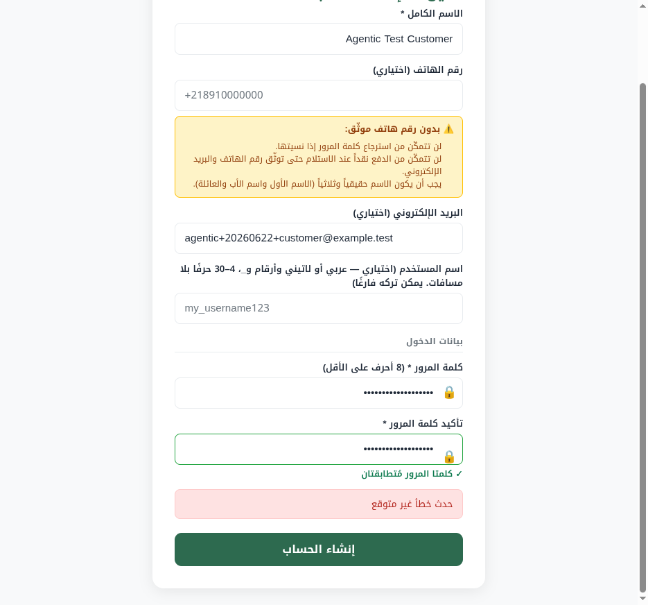
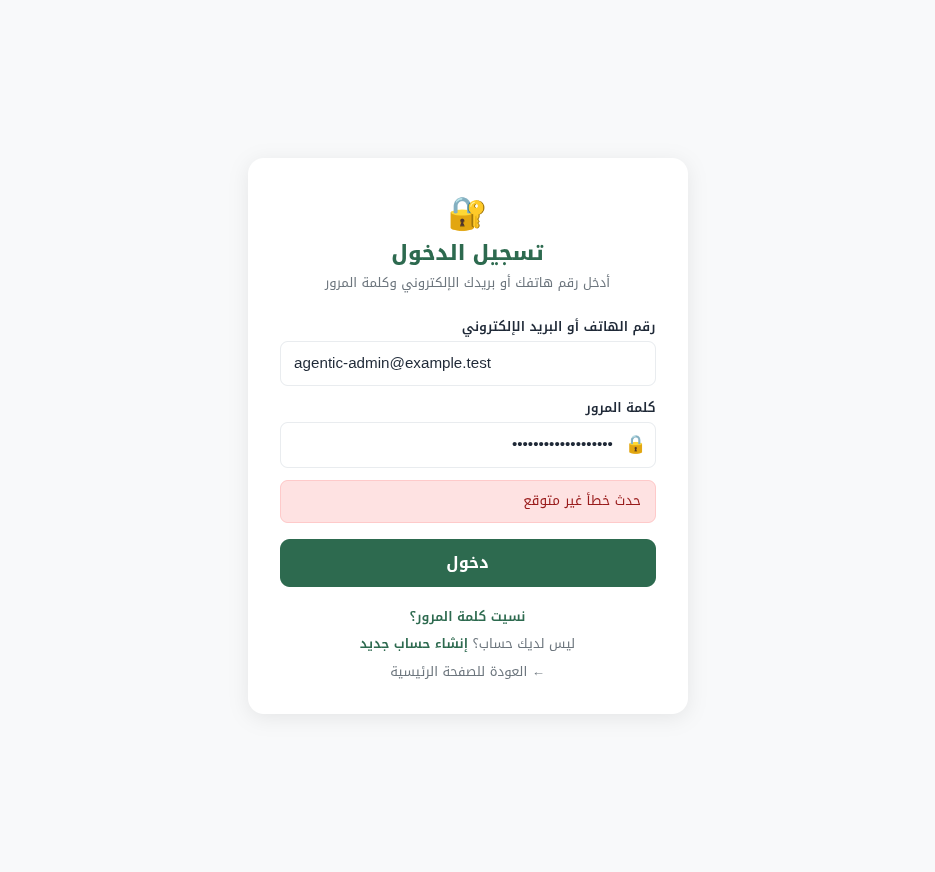
| اختبار | النتيجة | الاستنتاج |
|---|---|---|
curl POST /api/auth/login | 200 + توكن | الخلفية سليمة |
المتصفّح ← GET /api/health | 200 JSON | المتصفّح يصل الـAPI |
المتصفّح ← fetch() خام POST | 200 + توكن | طبقة الشبكة سليمة |
| المتصفّح ← axios التطبيق POST | يفشل قبل الإرسال | الخلل في طبقة axios |
في web/src/api/client.ts يضيف interceptor الطلب ترويستَي X-Correlation-Id وIdempotency-Key
عبر crypto.randomUUID(). هذه الدالة متاحة فقط في «سياق آمن» (HTTPS أو http://localhost).
على http://192.168.178.194:8090 (HTTP + غير-localhost) تكون undefined ← الـinterceptor يرمي استثناءً على
كل طلب ← axios يرفض الطلب قبل إرساله ← لا طلب يصل الخلفية، ولا خطأ console، وتظهر الرسالة العامّة.
لذلك لا يظهر على الإنتاج (HTTPS) ولا على localhost (سياق آمن) — لكنّه يُصيب أيّ نشر HTTP في شبكة/IP.
// web/src/api/client.ts — بديل يعمل في أيّ سياق function genUUID(): string { if (typeof crypto !== "undefined" && typeof crypto.randomUUID === "function") return crypto.randomUUID(); // مفضّل عند توفّره (HTTPS/localhost) const b = new Uint8Array(16); (crypto?.getRandomValues ? crypto.getRandomValues(b) : b.forEach((_,i)=>b[i]=Math.random()*256|0)); b[6]=(b[6]&0x0f)|0x40; b[8]=(b[8]&0x3f)|0x80; // RFC-4122 v4 /* …تنسيق… */ return uuid; } // الـinterceptor صار يستخدم genUUID() بدل crypto.randomUUID()
الفتح: أُعيد بناء صورة الويب على الاستاجينج، فظهر getRandomValues في الـJS المبنيّ، ودخول الأدمن عبر الواجهة على رابط الـLAN نجح:
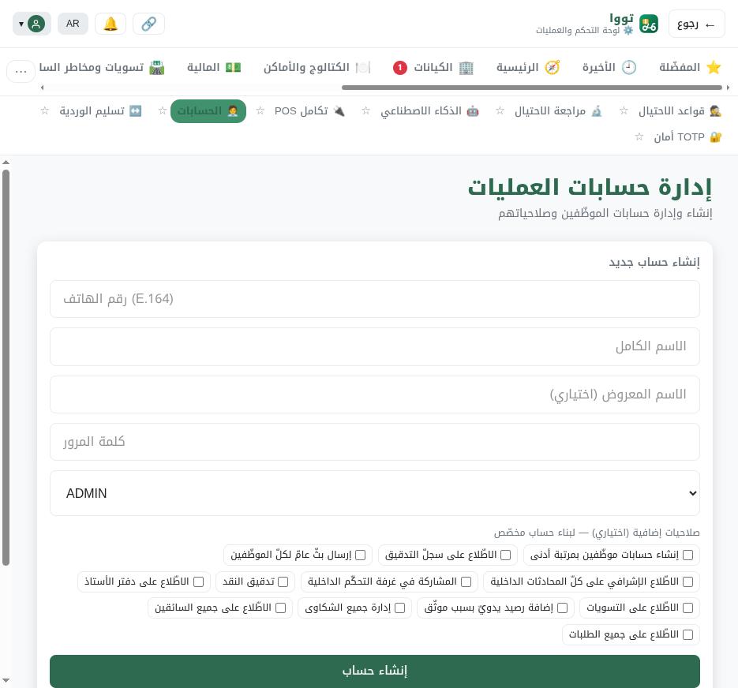
192.168.178.194:8090 ← لوحة العملياتعند فتح صفحة رفع وثائق KYC، ظهر «تعذّر تحميل الوثائق: 403» ولم يُعرَض نموذج الرفع إطلاقاً.
صفحة ProviderDocuments تجلب قائمة أنواع الوثائق المطلوبة من GET /operations/document-policies،
وهو endpoint محصور بأدوار OPS/COMPLIANCE/FINANCE/SUPER. المزوّد/السائق (دور مختلف) يحصل على 403 ←
يُكسَر نموذج الرفع كلّه، فلا يستطيع رفع الوثائق ← لا يُعتمَد ← دورة الحياة تتوقّف.
القائمة بيانات مرجعيّة غير حسّاسة (أيّ أنواع وثائق مطلوبة لكلّ نوع نشاط)، فأضفتُ دورَي المُسجِّل لقراءتها:
// backend/app/modules/operations/operations_router.py @router.get("/operations/document-policies") async def list_document_policies( user = Depends(require_role( PlatformRole.OPERATIONS_AGENT, PlatformRole.COMPLIANCE_AGENT, PlatformRole.FINANCE_AGENT, PlatformRole.SUPER_ADMIN, // Agentic-staging audit (BUG-2): قراءة مرجعيّة للمُسجِّل PlatformRole.PROVIDER_ADMIN, PlatformRole.DRIVER, )), …
الفتح: أُعيد بناء صورة الخلفية على الاستاجينج، وتحقّقتُ حيّاً: المزوّد ← GET /operations/document-policies = 200 (كان 403)، فظهر نموذج الرفع وعمل الرفع طرفاً لطرف.
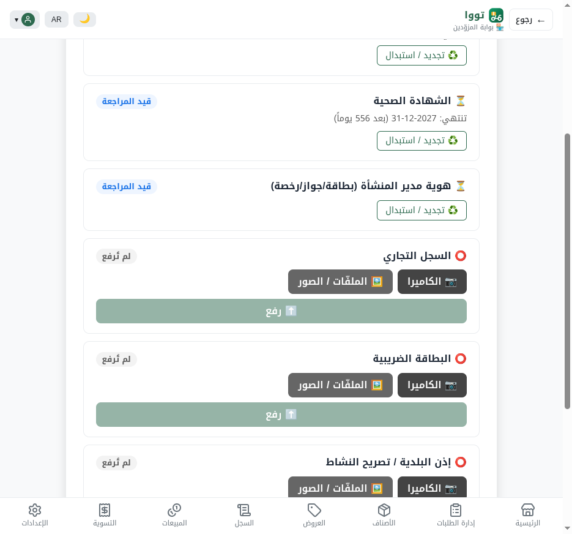
✅ كلا الإصلاحَين منشوران وحيّان على 192.168.178.194 فقط. لم يُنشَر شيء على الإنتاج.
| الإصلاح | كيف نُشِر | إثبات حيّ |
|---|---|---|
| crypto.randomUUID web/src/api/client.ts |
رفع الملفّ المُصلَح لإصدار الاستاجينج + docker compose up -d --build web-frontend |
الـJS المبنيّ يحوي getRandomValues ×2 · دخول الأدمن (axios POST) يُرجع توكن ✅ |
| document-policies 403 operations_router.py |
رفع الملفّ المُصلَح + docker compose up -d --build backend-core |
المزوّد ← /operations/document-policies = 200 (كان 403) ✅ |
ملاحظة: أُضيفت أيضاً خدمة MinIO إلى مشروع الاستاجينج (رفع وثائق KYC يحتاجها)، عبر docker-compose.agentic.yml فقط — معزولة كبقيّة الخدمات. الملفّات المُصلَحة محفوظة في إصدار الاستاجينج فتبقى عبر أيّ إعادة بناء لاحقة.
بعد الإصلاحَين، نُفِّذت دورة الحياة بأكملها عبر واجهة المتصفّح على رابط الـLAN وتُحقِّق منها في قاعدة البيانات في كل خطوة.
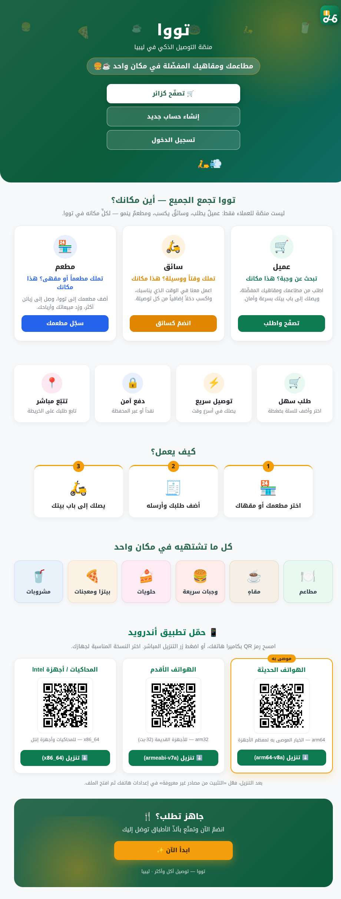
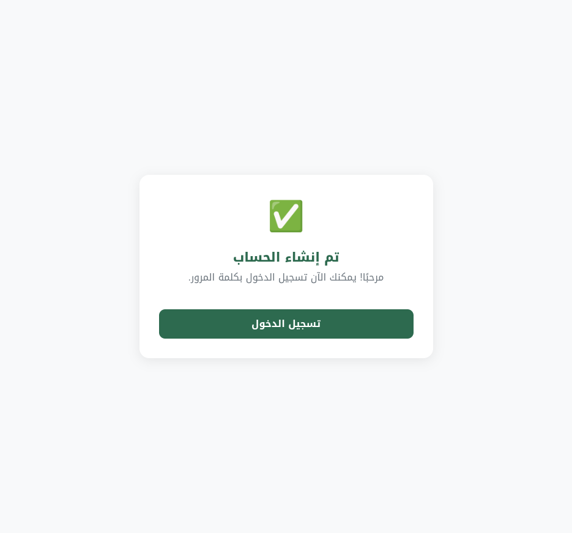
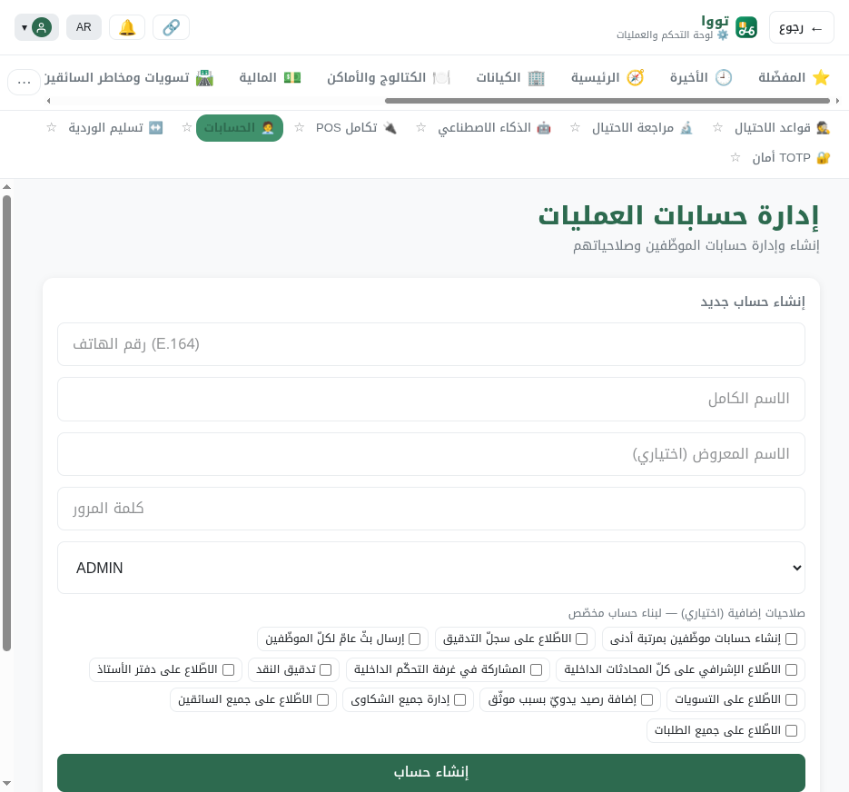
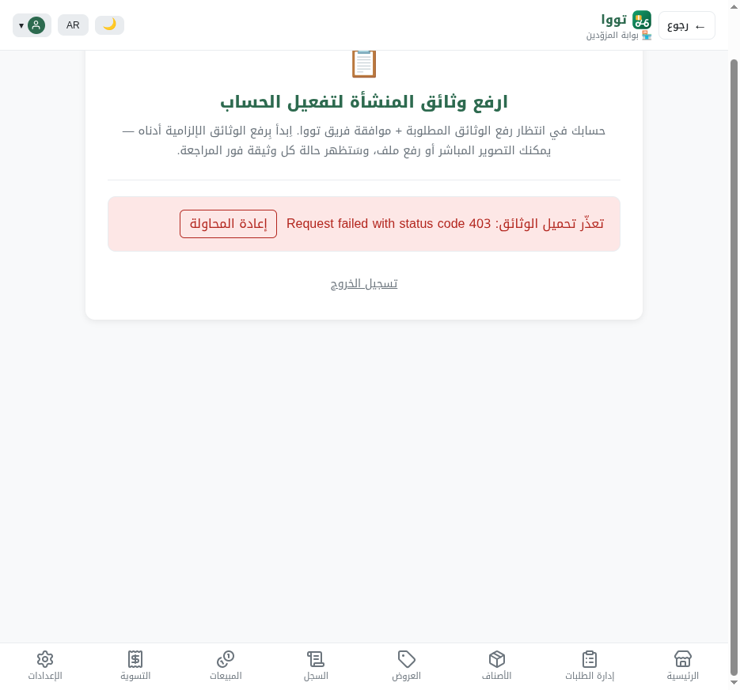
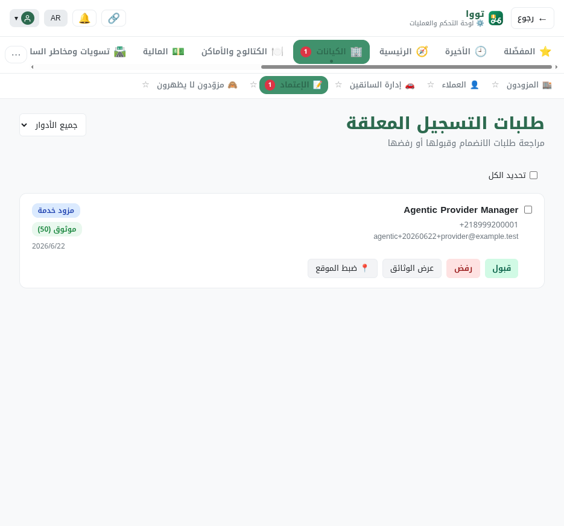
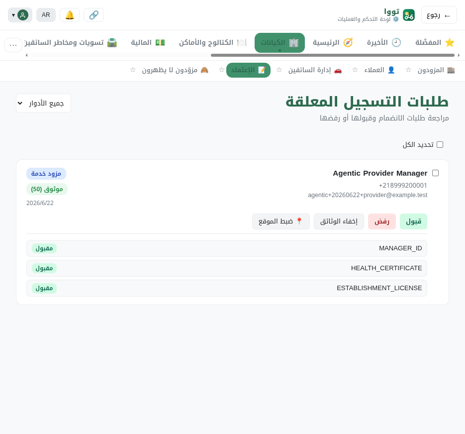
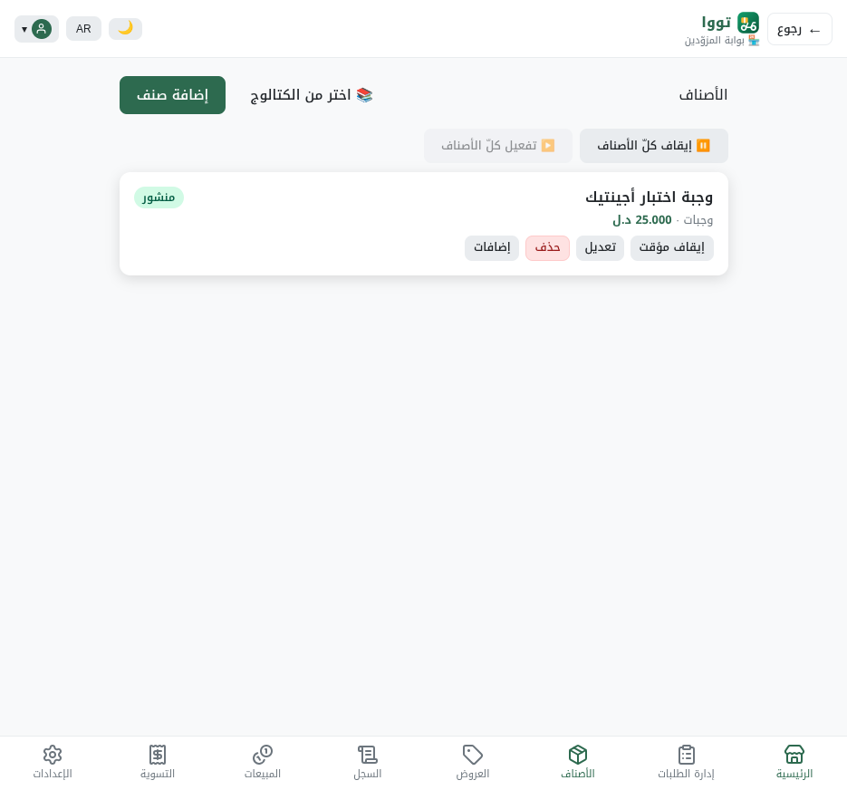
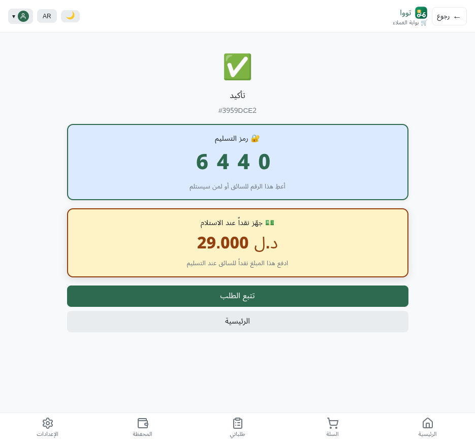
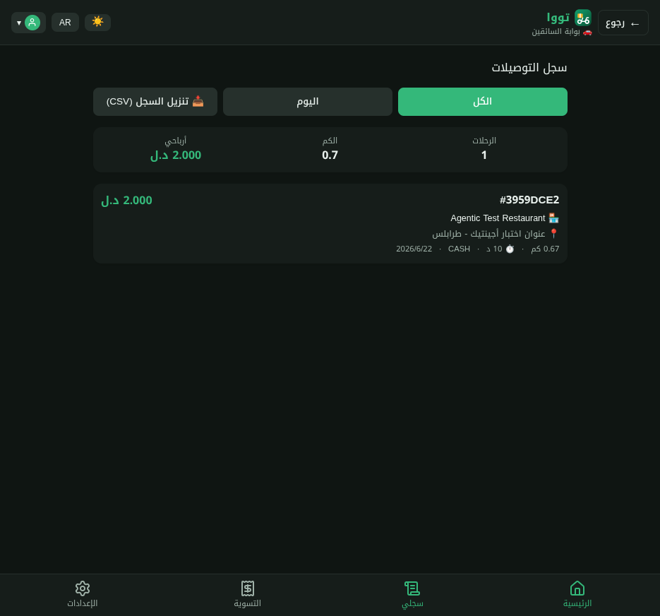
| الخطوة | الدور | نتيجة DB |
|---|---|---|
| تسجيل عميل عبر الواجهة | عميل | CUSTOMER / ACTIVE |
| رفع 3 وثائق KYC (←MinIO) | مزوّد | وثائق PENDING |
| اعتماد الوثائق + الموافقة على الإعداد | أدمن | PROVIDER_ADMIN / ACTIVE · is_accepting_orders=t |
| توقيع العقد الإلكترونيّ (صورة كاميرا→ملفّ + توقيع) | مزوّد | «تم توقيع العقد» |
| فتح المتجر + نشر منتج | مزوّد | active_now=t · منتج منشور |
| رفع 4 وثائق سائق + اعتماد + موافقة + عقد + توفّر | سائق/أدمن | DRIVER / ACTIVE · available=t |
| تصفّح → سلة → عنوان → طلب نقديّ | عميل | #3959DCE2 · 29.000 د.ل · كود 6440 |
| قبول → قائمة تغليف → جاهز للاستلام | مزوّد | توزيع تلقائيّ ← عرض SENT للسائق |
| رؤية العرض → قبول → قائمة استلام → تأكيد | سائق | «بانتظار مسح المزوّد» |
| تأكيد كود الاستلام A4C2 (سلطة المزوّد) | مزوّد | → EN_ROUTE |
| وصول → كود التسليم 6440 → تسجيل الكاش → إثبات | سائق | إثبات ACCEPTED · geofence صحيح |
| 🏁 الحالة النهائيّة | — | DELIVERED |
جوهر مهمّ مُتحقَّق: الاستلام سلطة المزوّد — السائق يؤكّد جاهزيّته، لكن انتقال العهدة إلى PICKED_UP/EN_ROUTE لا يحدث إلا بعد أن يُدخل المزوّد كود الاستلام (A4C2)؛ والتسليم يتطلّب كود العميل (6440) + تسجيل الكاش + إثبات GPS.
⚖️ دفتر الأستاذ مزدوج القيد متوازن: Σمدين 29005 = Σدائن 29005 (الفرق 0).
| مقياس | قيمة | الدلالة |
|---|---|---|
| حالة الطلب | DELIVERED (CASH) | اكتمل |
| الكاش المحصَّل | 29000 ملّيم (29.000 د.ل) | = الإجمالي المتوقَّع |
| عهدة السائق النقديّة | 29000 ملّيم | السائق يحمل الكاش المحصَّل |
| تسويات مُولَّدة | 1 | تسوية المزوّد أُنشئت |
| توازن دفتر الأستاذ | DR 29005 = CR 29005 · فرق 0 | سليم؛ الـ+5 = قيد تقريب الفكّة (250 ملّيم) لإيراد المنصّة |
«الفكّة» (التقريب لأقرب ¼ دينار) ظهرت في الدفع: 25.000 منتج + 4.005 توصيل − 0.005 تقريب = 29.000 — والقيد المحاسبيّ للتقريب مُلتقَط ومتوازن.
| المُحاوِل | المورد | المتوقَّع | الفعليّ |
|---|---|---|---|
| عميل | /operations/dashboard | 403 | 403 ✅ |
| عميل | /operations/onboarding/pending | 403 | 403 ✅ |
| سائق | /operations/dashboard | 403 | 403 ✅ |
| سائق | /finance/refunds | 403 | 403 ✅ |
| مزوّد | /operations/dashboard | 403 | 403 ✅ |
| مزوّد | /dispatch/offers (سائق فقط) | 403 | 403 ✅ |
| عميل | /providers/me (مزوّد فقط) | 403 | 403 ✅ |
| عميل | /events/stream | محجوب | 422 (يتطلّب token-param إداريّ) |
| ضوابط إيجابيّة: كل دور ← مورده نفسه | 200 | 200 ✅ (customer/me · dispatch/offers · providers/me) | |
كل وصول عبر-الأدوار مرفوض، وكل دور يصل موارده الخاصّة. (الـ422 على events/stream محجوب فعليّاً — تدفّق SSE يتطلّب رمز إداريّاً عبر باراميتر.)
3 انتقالات يقودها عادةً عتاد الهاتف (يفتقده متصفّح headless) نُفِّذت عبر API التطبيق من سياق المتصفّح (نفس ما يُطلقه الجهاز):
الكاميرا (العقد/الوثائق) استخدمت fallback مُنتقي الملفّات (زرّ الكاميرا يتحوّل لمُنتقٍ على غير-المحمول) بملفّات «TEST DOCUMENT ONLY».
الـGPS حُقِن بإحداثيّات طرابلس عبر navigator.geolocation لمتصفّح بلا موقع حقيقيّ.
| المعرّف | الخطورة | الوصف | الحالة |
|---|---|---|---|
| BUG-1 | HIGH | crypto.randomUUID() في interceptor axios = undefined على HTTP غير-localhost → كل طلبات الواجهة تفشل | مُصلَح + منشور + مُتحقَّق |
| BUG-2 | MEDIUM | صفحة وثائق المزوّد/السائق تستدعي /operations/document-policies الإداريّ → 403 يكسر نموذج الرفع | مُصلَح + منشور + مُتحقَّق |
| ENV-1 | بيئيّ | توفّر-السائق/الوصول/الإثبات نُفِّذت عبر API التطبيق (لا عتاد GPS في headless) | قيد بيئيّ — لا عيب تطبيق |
| ENV-2 | بيئيّ | الكاميرا تتحوّل لمُنتقي ملفّات؛ الوثائق ملفّات اختبار | سلوك مقصود (fallback) |
| OBS-1 | ملاحظة | صفحة التسليم تعيد قفل «علم الكاش» المحلّي بعد إعادة تحميل رغم تسجيل الكاش خادميّاً | تجميليّ — يستحقّ مراجعة UX لاحقاً |
يوجد 4 مواضع أخرى لـ crypto.randomUUID() غير محميّة في الويب (محدودة بميزات: سجلّ التنبيهات، بحث الهاتف، تحويل المحفظة، سياق التأثير).
يُنصَح باستخراج genUUID إلى أداة مشتركة (utils/) واستبدالها — لتفادي نفس العطل على أيّ نشر HTTP-LAN مستقبليّ.
# الوصول مباشرةً (بعد إصلاح BUG-1 يعمل دون نفق): http://192.168.178.194:8090 # أدمن: agentic-admin@example.test / AgenticStaging#2026 # إعادة بناء بعد أيّ تعديل لاحق: ssh abd@192.168.178.194 'cd /opt/tawa-agentic-staging/current && \ COMPOSE_PROJECT_NAME=tawa-agentic-staging docker compose \ --env-file .env.agentic-staging -f docker-compose.yml \ -f docker-compose.agentic.yml --profile dev-minimal up -d --build' # حذف الاستاجينج بالكامل (لا رجعة): ssh abd@192.168.178.194 'bash /opt/tawa-agentic-staging/current/scripts/\ agentic/destroy_agentic_staging.sh --confirm-agentic-staging-delete'
حالة الحاويات وقت كتابة التقرير: 5/5 صحّية (backend-core · web-frontend · postgres · redis · minio). الاستاجينج ما زال يعمل للمراجعة — لم يُحذَف.
| الملفّ | التعديل | أثر الإنتاج |
|---|---|---|
web/src/api/client.ts | BUG-1: genUUID() بديل بدل crypto.randomUUID() (×2 في interceptor) | لا أثر — crypto.randomUUID يبقى مفضّلاً عند توفّره |
backend/app/modules/operations/operations_router.py | BUG-2: إضافة PROVIDER_ADMIN + DRIVER لقراءة document-policies | توسعة قراءة لبيانات مرجعيّة غير حسّاسة |
| المسار | الغرض |
|---|---|
/opt/tawa-agentic-staging/.env.agentic-staging | بيئة معزولة (DB/سرّ/منفذ/أعلام) |
…/current/docker-compose.agentic.yml | override العزل + MinIO |
…/current/scripts/agentic/destroy_agentic_staging.sh | سكربت حذف آمن |
| الدور | الهويّة | الحالة |
|---|---|---|
| أدمن (SUPER_ADMIN) | agentic-admin@example.test · +218999000001 | ACTIVE |
| عميل | agentic+20260622+customer@example.test · +218999100001 | ACTIVE |
| مزوّد (Agentic Test Restaurant) | agentic+20260622+provider@example.test · +218999200001 | ACTIVE |
| سائق (DRV-72VH6M) | agentic+20260622+driver@example.test · +218999300001 | ACTIVE · available |
كل كلمات السرّ: AgenticStaging#2026 — للاستاجينج المعزول فقط؛ لا تُعاد على الإنتاج.
التقرير التقنيّ الكامل: platform/agentic_report/003_AGENTIC_STAGING_ISOLATED_ROLE_LIFECYCLE_AUDIT.md ·
الأدلّة الـ13 + ملفّات الاختبار: platform/agentic_report/evidence/ (ومنسوخة هنا في agentic-evidence/).